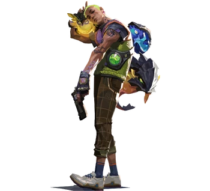

| Nacido y criado en Los Ángeles, California, Mateo Armendáriz De la Fuente, indicativo "Gekko", es el vigésimo segundo recluta de VALORANT y el dueño de Dizzy, Mosh, Thrash y Wingman, una tripulación de cuatro peculiares criaturas con la habilidad transformarse entre formas animales y un estado de glóbulo. Anteriormente propiedad de K-SEC, estas criaturas ahora viven con Gekko, a menudo viajando con él donde quiera que vaya dentro de su pequeño portaequipajes que Gekko usa como una faja, de la cual emergerán y tomarán forma en un momento para ayudarlo. |
 |